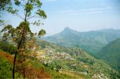
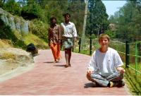
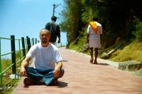

|
Dimanche 18 mars
Ce soir, ca fait tout drole: nous sommes habitues aux grosses chaleurs du sud
et nous voici, pauvres malheureux en short et T-shirt a 2200 metres d'altitude
a la nuit tombante. Et bien on se gele! Et pour une fois, on benit nos sacs
a dos de nous tenir bien chaud! Alors qu'on serait bien restes sous la douche
froide toute la journee depuis un mois, la, on a cherche un hotel avec eau chaude!
D'ailleurs, elle est plutot tiedasse la douche chaude. Il doit quand meme faire
mini 15 a 18 degres... Rien a voir avec la temperature en France du moment,
hi hi hi. Aujourd'hui, c'etait tout pepere: train Trivandrum-Madurai a 4h15
du matin, arrivee vers midi. De la, on est partis directement en bus vers Kodaikanal.
Le trajet pour monter est tres sympa meme si ca donne parfois le vertige. On
est montes a travers un paysage d'abord sec (comme a Madurai, a la difference
de Trivandrum) puios extremement verdoyant, arbres, buissons, lianes faisant
le bonheur des singes. On comprend d'ou ca vient, l'eau suinte sur les rochers.
Lionel est tres fier de sa barbiche, il reclame meme une brosse pour la coiffer.
En plus, il trouve que son crane rase met sa barbiche en valeur et en est donc
ravi. Ce qui flatte son ego, ce sont les indiens qui n'arretent pas de lui dire
qu'il a une jolie barbe (les jaloux) et qui la lui tripotent volontiers!!! Faut
dire qu'ici, les hommes se mettent du rouge a ongles et se tiennent par la main,
alors pourquoi ils ne se tripoteraient pas la barbiche?!
En fait, l'eau chaude il fallait la demander 1/2 heure avant. Du coup, ce soir,
j'ai pris... un bain! He oui, grand luxe! Debout dans un grand seau en fer rempli
d'eau chaude jusqu'aux mollets, je me suis lavee a grande eau avec un petit
brot en plastique. Ca ressemble plus a un bain de pieds qu'a l'idee qu'on se
fait habituellement d'un bain, mais ca reste un bain!
Lundi 19 mars
Assise sur le muret de l'hotel, je domine la valle et la montagne alentours.
J'ai mis un pantalon, des chaussettes et un pull pour affronter la fraicheur
de la soiree. Ambiance village avec les cuicui des oiseaux, le bruit de la hache
qui fend le bois, les cris des enfants qui jouent, les meuglements des vaches,
les odeurs de diner qui montent, les chiens qui jouent au loin. Et partout,
des arbres immenses, des jardins et des ruelles s'etalent sous mes yeux. C'est
tres vivant, il y a partout des gens qui se promenent, rentrent tranquillement
chez eux ou vaquent a leurs occupations. Bref, ici comme partout en Inde, on
se deplace beaucoup a pieds. De plus, pas de rickshaws a Kodaikanal, c'est tout
benef pour les oreilles!
Aujourd'hui, petite ballade tres sympa (5 heures tout de meme) sur la upper
lake view road. Riche en rencontres et en vie campagnarde. On s'est fait plein
de camarades qui voulaient qu'on les prenne en photo et qu'on leur envoie les
photos. Une voiture s'est meme brusquement arretee devant nousm un type en a
jailli une fillette dans les bras, et l'a collee sans plus de manieres dans
les miens! Pour me prendre en photo avec sa fille! Ils etaient tous ravis, pere,
mere et famille. La petite fille etait un peu surprise! Moi aussi... On a rencontres
plein de gens sympas, decontractes et accueillants. Une vieille femme s'est
montree extremement ravie que nous soyons francais, un jeune homme nous a souhaite
bon voyage, de nombreux autres nous ont fort gentiment indiques le chemin, meme
une vielle dame qui ne parlait pas un mot d'anglais, ni ne le comprenait! Elle
etait desolee mais, tout sourire, nous a quand meme indique la bonne direction!
Les touristes, ils vont tous aux memes endroits!
Ici, il y a beaucoup de refugies tibetains. Le climat leur plait. On a d'ailleurs
dine dans un resto tibetains, un vrai regal les momos (raviolis frits ou vapeur,
fourres avec plein de choses).
L'info du jour: Lionel m'a un peu raccourci les cheveux dans le cou et derriere
les oreilles "on voit bien que ce n'est pas un vrai coiffeur qui l'a fait" dixit
Lionel mort de rire.
Mardi 20 mars
Il y a un point sur lequel les indiens sont fous furieux: les transports en
commun et en particulier les bus! Les trajets sont longs, les routes mauvaises,
les bus bondes alors ils font vraiment tout leur possible pour avoir une place
assise quitte a s'ecrabouiller les uns les autres. En arrivant a Kodai, le bus
a ete veritablement assailli! Certes, c'est le dernier de la journee a redescendre
sur Madurai mais quand meme! Etant la derniere a descendre, je me suis retrouvee
face a uine maree humaine, engloutie en moins de deux et forcee a faire machine
arriere sur le marche-pied! Impossible de descendre, la poussee de 20 ou 30
indiens lances a l'assaut des sieges etait trop puissante! Finalement, j'ai
mis les coudes en avant et je me suis lancee dans le tas, prenant de l'elan
sur le marche pied! Non mais, j'avais pas envie de redescendre a Madurai!
Suite du voyage : Madurai
|

Inde
Kodaikanal
|

Inde
Kodaikanal
|

Inde
Kodaikanal
|
|
|